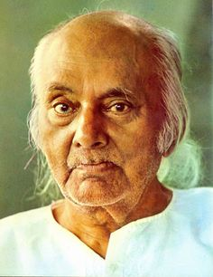

Rebel poet
Kazi Nazrul Islam is the national poet of Bangladesh who is especially recognised as Bidrohi Kobi (rebel poet) around the country. Nazrul is a famous poet, musician and philosopher of Bangladesh The famous poet Nazrul's writings deal with the revolution of that period of the British government His revolutionary attempt helped him to be a national poet of Bangladesh. He has raised his voice against any kind of fasism and opression and got popularity swiftly around the Indian Subcontinent.
Awesome Writer
Nazrul's writings explored themes such as love, freedom, humanity and revolution. He opposed all forms of bigotry and fundamentalism, including religious, caste-based and gender-based. Throught his career, Nazrul wrote short stories, novels, and essays but is best known for his songs and poems. He pioneered new music forms such as Bengali ghazals. Nazrul wrote and composed music for nearly 4,000 songs (many recorde on HMV and gramophone records),collectively known as Nazrul Geeti.

"Love has no meaning or amount"- Kazi Nazrul Islam
 Awards
Awards
Jagattarini Gold Medal
1945
From the university of calcutta for his work in Bengali literature
Padma Bhusan
1960
One of the highest civilian honours of the Republic of India
National Poet
Confered the title by the Government of Bangladesh
Ekushey Padak
1976
Bangladesh's highest civilian honours
- Agni Bina (The Fiery Lute), 1922
- Sanchita (Collected poems),1925
- Phanimanasa (The Cactus), 1927
- Chakrabak (The Flamingo), 1929
- Satbhai Champa (The seven Brothers of Champa),juvenile poems, 1933
- Nirjhar (Fountain), 1939
- Natun Chand (The New Moon), 1939
- Morubhaskar (The Sun in the Desert), 1951
- Sanchayan (Collected Poems), 1955
- Nazrul Islam: Islami Kobita (a Collection of Islamic Poems; Dhaka, Bangladesh Islamic Foundation, 1982)
- Dolan Chapa (name of a faintly fragrant monsoon flowers), 1923
- Bisher Bashi(The Poison Flute), 1924
- Bhangar Gan(The Song of Destruction), 1924 proscribe in 1924
- Chhayanat (The Raga of Chhayanat), 1925
- Chittanama (On Chittaranjan), 1925
- Samyabadi(The Proclaimer of Equality), 1926
- Puber Hawa (The Eastern Wind), 1926
- Sarbahara(The Proletariat), 1926
- Sindhu Hindol (The Undulation of the Sea), 1927
- Jinjir (Chain), 1928
- Pralaya Shikha (Doomsday Flame), 1930 proscribed in 1930
- Shesh Saogat(The Last Offering), 1958
About the author
Made by Cheerla Ranjith as part of the daily task from Zen classes
Techs Used
HTML, CSS, Bootstrap
Content Disclaimer
This content is mostly copied from Wikipedia, BiographyBD, Thefamouspeople, Original credit goes to the respective authors.